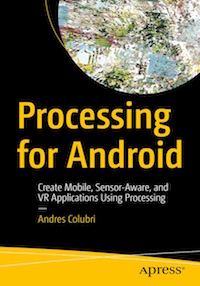
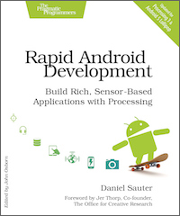

Below you have a list of available books on Processing for Android. Write to android@processing.org to let us know of any other publications that should be included here.
Andres Colubri
Published October 2017, Apress. 381 pages. Paperback.
Order from Apress
Order from Amazon
Order from Barnes & Noble
Read first three chapters online

Learn how to use the Processing programming language and environment to create Android applications with ease. This book covers the basics of the Processing language, allowing users to effectively program interactive graphics in 2D and 3D, and describes in detail the application of these techniques to different types of Android devices (smartphones, tablets, wearables and smartwatches, as well as to Cardboard-compatible devices in order to create VR experiences). With this book, you will be able to write engaging apps with interactive visuals driven by motion and location information obtained from the device’s sensors; including health data from the wearer, like step count and heart rate.
Daniel Sauter
Published December 2014, The Pragmatic Bookshelf. 384 pages. Paperback.
Order from The Pragmatic Bookshelf
Order from Amazon
Read full book online

Create mobile apps for Android phones and tablets faster and more easily than you ever imagined. Use “Processing,” the free, award-winning, graphics-savvy language and development environment, to work with the touchscreens, hardware sensors, cameras, network transceivers, and other devices and software in the latest Android phones and tablets.